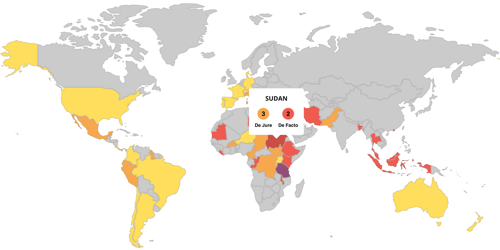
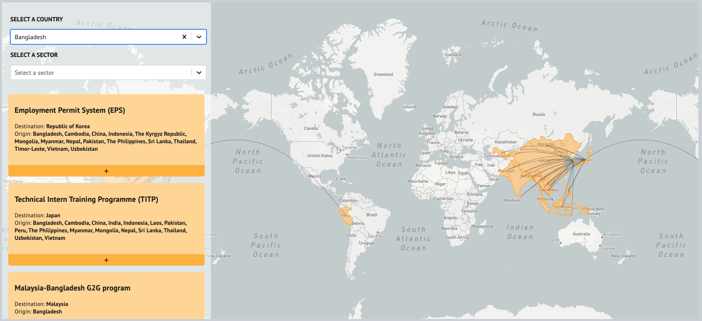
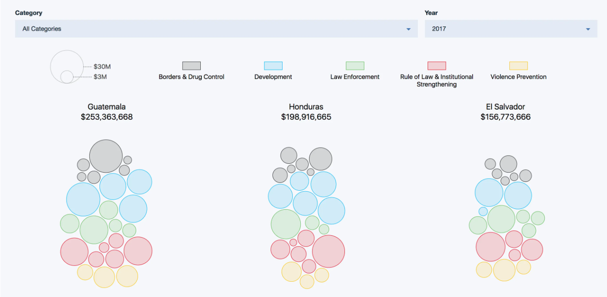

Datasets
I have developed and contributed to several publicly available datasets on migration, refugee work rights, and governance.

Global Refugee Work Rights Dataset, Scorecards, and Map
Center for Global Development, 2022
A global dataset documenting the legal right of refugees to work, accompanied by country scorecards and an interactive map.
Visit refugee work rights scorecard →
Global Skill Partnerships Dataset and Portal
Center for Global Development, 2021
A global dataset and interactive portal documenting Global Skill Partnerships, which link skills training in countries of origin with expanded pathways for international labor mobility.
Visit Global Skill Partnerships portal →
Central America Monitor: El Salvador
Washington Office on Latin America (WOLA), 2020
Data and analysis tracking governance, security, and human rights indicators in El Salvador as part of the Central America Monitor project.
Visit Central America Monitor: El Salvador →